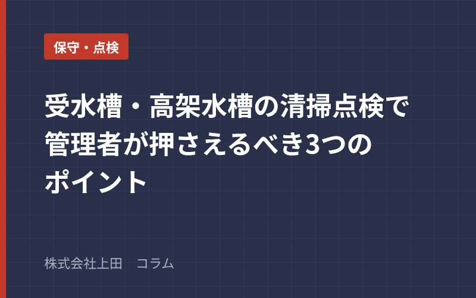

保守・点検
2026年10月
受水槽・高架水槽の清掃点検で管理者が押さえるべき3つのポイント
マンションや商業ビルの給水設備として欠かせない受水槽・高架水槽は、有効容量10m³を超えるもの（簡易専用水道）について、水道法により年1回の清掃と定期検査が義務付けられています。
管理者が特に注意すべき3点は
①槽内壁・浮き球・マンホールパッキンの劣化確認（ひび割れは雑菌汚染の入口となるため早期交換が必須）
②水位調整弁（ボールタップ）の動作チェック（弁の引っかかりや磨耗はオーバーフローや断水の原因となる）
③清掃後の残塩素測定（清掃・消毒後に0.1mg/L以上の残留塩素を確認しないと衛生基準を満たせないため、専門業者による水質検査報告書の取得が必要）。
適切な管理で居住者の安全を守りましょう。